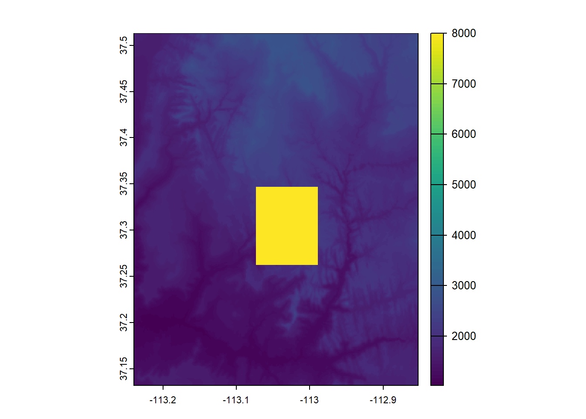
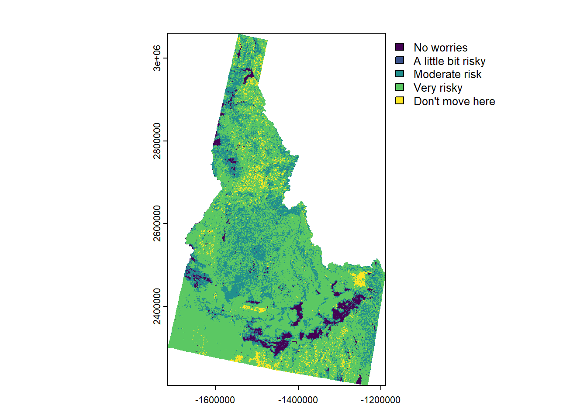

Code
library(tidyverse)
library(terra)
srtm = rast(system.file("raster/srtm.tif", package = "spDataLarge"))
srtm3 <- focal(x = srtm, w = 3)
srtm9 <- focal(x = srtm, w = 9)
srtm21 <- focal(x = srtm, w = 21)Carolyn Koehn

Warning: [set.cats] setting categories like this is deprecated; use a
two-column data.frame insteadReassigning the levels like this shows a warning that this method is deprecated. This is the two column data.frame method it prefers:
|---------|---------|---------|---------|
=========================================

---
title: "Session 13 Code"
author: "Carolyn Koehn"
format: html
---
```{r}
#| include: false
terra::terraOptions(progress=0)
```
## Code from slides
```{r}
#| message: false
#| warning: false
library(tidyverse)
library(terra)
srtm = rast(system.file("raster/srtm.tif", package = "spDataLarge"))
srtm3 <- focal(x = srtm, w = 3)
srtm9 <- focal(x = srtm, w = 9)
srtm21 <- focal(x = srtm, w = 21)
```
```{r}
srtmsum <- focal(x = srtm, w = 3, fun="sum")
srtmmax <- focal(x = srtm, w = 9, fun="mean")
srtmmin <- focal(x = srtm, w = 21, fun="min")
```
```{r}
srtm.lowelev <- srtm
srtm.lowelev[srtm.lowelev > 2500] <- 1
plot(srtm.lowelev)
```
```{r}
srtm.na <- srtm
srtm.na[200:300, 200:300] <- NA
srtm.na[is.na(srtm.na)] <- 8000
plot(srtm.na)
```
```{r}
mintemp <- rast("ftp://ftp.hafro.is/pub/data/rasters/Iceland_minbtemp.tif")
cm <- matrix(c(
-2, 2, 0,
2, 4, 1,
4, 10, 2), ncol = 3, byrow = TRUE)
# Create a raster with integers
temp_reclass <- classify(mintemp, cm)
tempcats <- c("cold", "mild", "warm")
levels(temp_reclass) <- tempcats
```
Reassigning the levels like this shows a warning that this method is deprecated. This is the two column data.frame method it prefers:
```{r}
tempcats2 <- data.frame(value = c(0, 1, 2),
category = c("cold", "mild", "warm"))
levels(temp_reclass) <- tempcats2
```
## Hillshade
```{r}
srtm.slope <- terrain(srtm, "slope", unit="radians")
srtm.aspect <- terrain(srtm, "aspect", unit="radians")
srtm.shade <- shade(srtm.slope, srtm.aspect)
```
```{r}
plot(srtm.shade, col=grey(0:100/100), legend=FALSE)
plot(srtm, col=rainbow(25, alpha=0.35), add=TRUE)
```
## Practice:
### Load wildfire risk data
```{r}
#| eval: false
wildfire.risk <- rast("/opt/data/data/rasterexample/Copy of CRPS_ID.tif")
plot(wildfire.risk)
```
```{r}
#| include: false
wildfire.risk <- rast("C:/Users/carolynkoehn/Documents/HES505_Fall_2024/data/2023/rasterexample/Copy of CRPS_ID.tif")
plot(wildfire.risk)
```
### Get boundary for county
```{r}
#| message: false
library(tidyverse)
library(sf)
id_counties <- tigris::counties("ID", progress_bar = FALSE)
ada.cty <- filter(id_counties, NAME == "Ada")
plot(st_geometry(ada.cty))
```
### Reclassify wildfire data
```{r}
#| message: false
# Method 1
rcl <- data.frame(from = c(0,10,30,50,80),
to = c(10,30,50,80,100),
becomes = c(0:4))
# Method 2
rcl.m <- matrix(c(
0, 10, 0,
10, 30, 1,
30, 50, 2,
50, 80, 3,
80, 100, 4
), ncol=3, byrow=TRUE)
# Both methods work for the second argument
wr_reclass <- classify(wildfire.risk, rcl.m)
# Add names
wr_cats <- data.frame(value = 0:4,
category = c("No worries",
"A little bit risky",
"Moderate risk",
"Very risky",
"Don't move here"))
levels(wr_reclass) <- wr_cats
plot(wr_reclass)
```
### Smooth categorical raster
```{r}
#| message: false
#| warning: false
wr_sm <- focal(wr_reclass, w=7, fun="modal")
plot(wr_sm)
```
### Make county-level map
```{r}
# match CRS
ada_proj <- st_transform(ada.cty, crs(wr_sm))
wr_sm_ada <- crop(wr_sm, ada_proj, mask=TRUE)
plot(wr_sm_ada)
```